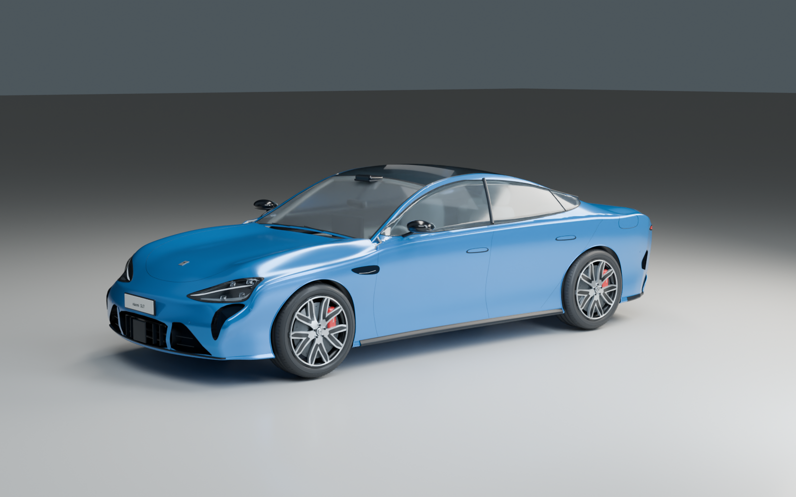
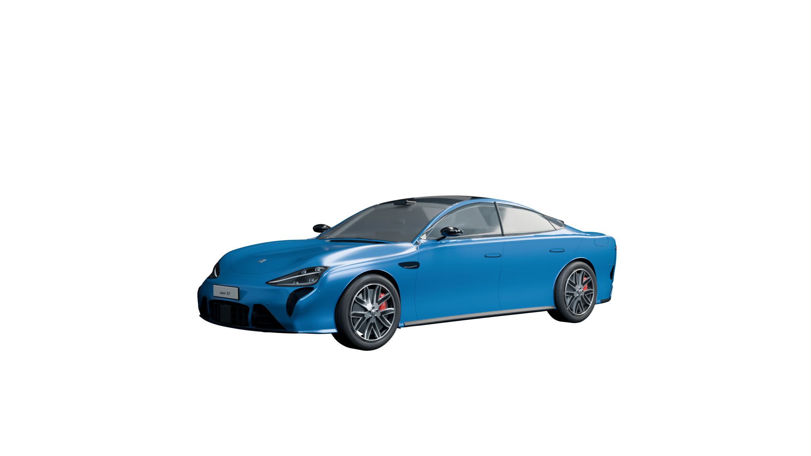
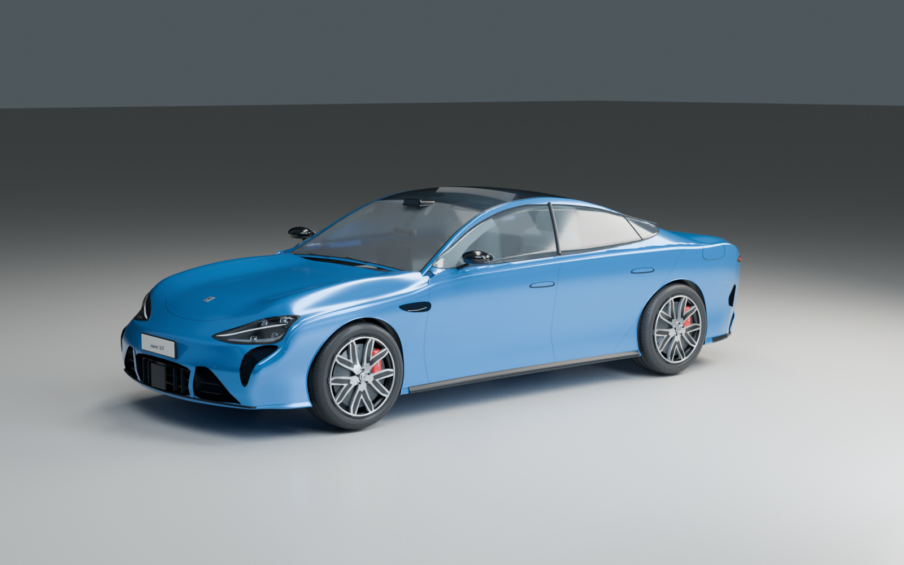
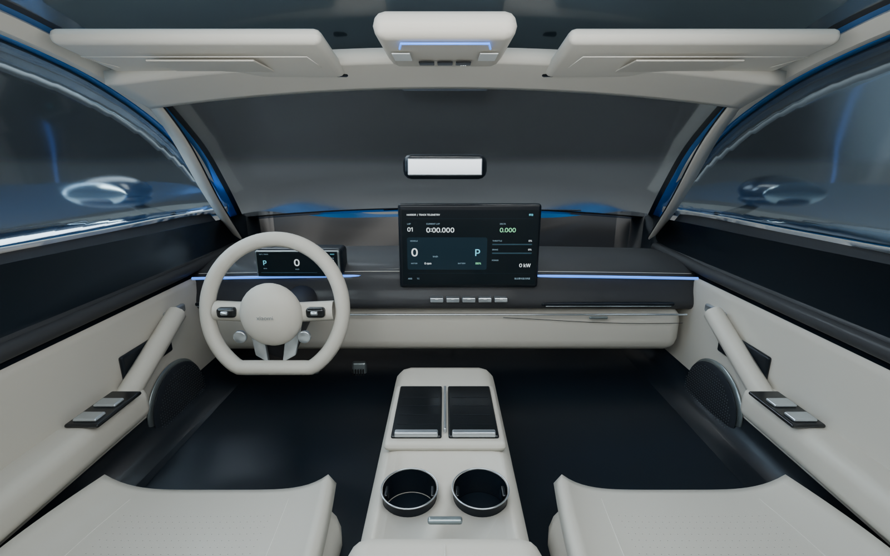

这一轮细化座椅、门板扬声器、踏板与内饰收边，将仪表和中控改为独立动态显示面。可对照第六版与官方座舱照片。

已调整：前排座椅曲面、包边与打孔；门板扬声器、踏板、顶棚与 A 柱内衬；仪表和中控可接收实时车速、电机转速、功率、圈速和踏板输入。此处为停驻渲染，打开 3D 模型的「仪表」视角可运行动态演示。
仍有差异：保险杠与侧窗局部曲率、光学结构和座椅。赛车仪表是本项目原创界面，并非小米车机界面复刻。未取得厂家 CAD 或扫描资料。相机仅按人工标记拟合，不能把标记误差当作整车复原度；新旧整车展示图保留共同机位。
调节模型透明度，观察轮廓和部件位置。底图为官方照片，上层为拟合机位下的实际 Blender 透明渲染。


